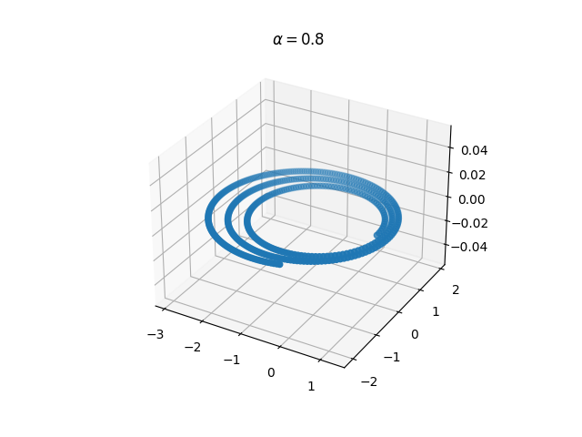
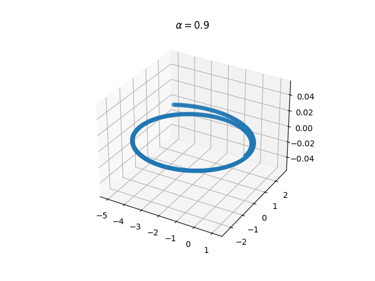
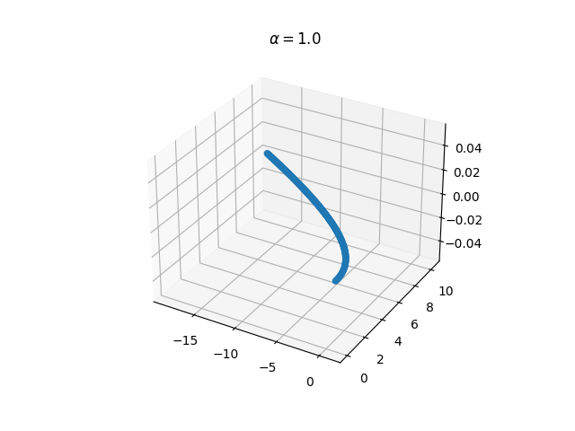
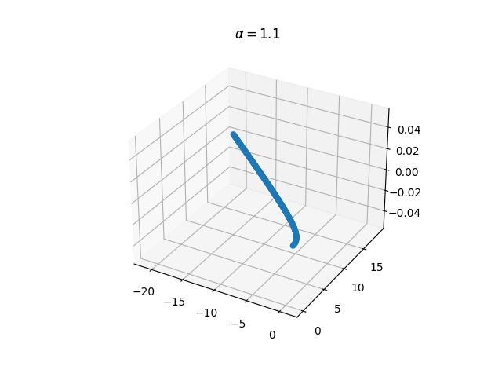

This site documents detailed development of the Monte Carlo simulation code to generating dark matter particle capture of astrophysical objects, for now, the sun.
The current plots generated using integrator of verlet method is concluded that the keplers orbit (initial condition dependent), appears to not be energy conserved.
   It is then motivated to make use of the package swifter with sympletic integrators for celestial mechanics.
It is, after multiple hours of compiling and debugging, realized that the compilation of swifter is highly dependent on the OS -lSystem always fails to compile on MacOS.
Successful compilation of Swifter allows us to move our execution of integration from python to fortran developed codes.